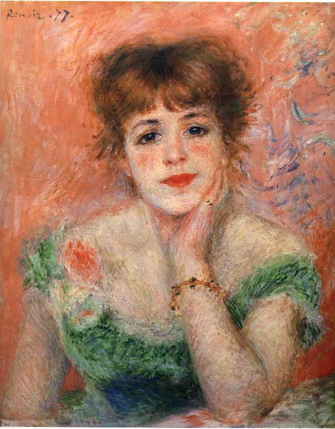
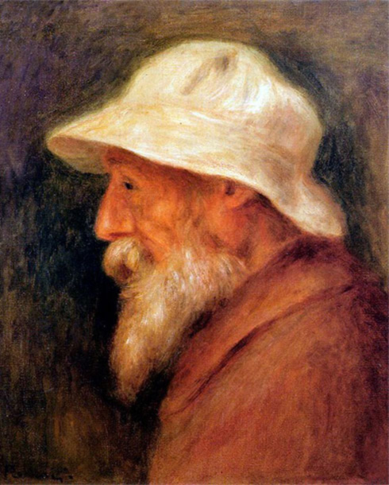
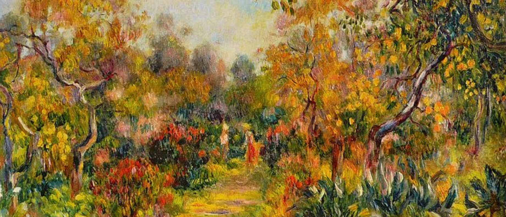

Ache belo tudo o que puder. A maioria das pessoas não acha belo o suficiente.
Pinturas que tiveram um grande marco na hitória da arte
Torso, Efeito do Sol, 1876 - Pierre Renoir
Uma obra impressionista que acabou recebendo duras críticas pelos internautas com a afirmação de que parecia um corpo em estado de descomposição pelas manchas verdes e violáceas.
Mona Lisa, 1503-1506 - Leonardo da Vinci
Ela apresenta o retrato (do busto para cima) de uma mulher serena. No mundo da arte é a obra mais cara do mundo, avaliada em muitos milhões. A identidade da pessoa que supostamente inspirou Leonardo é desconhecida, havendo diversas especulações sobre quem realmente ela é.
Vincent Van Gogh


Oscar-Claude Monet


Pierre-Auguste Renoir



Além de ter deixando mais de duzentas obras de arte, Renoir serviu de inspiração para muitos outros artistas, Pierre Bonnard, Henri Matisse e Pablo Picasso são apenas alguns que beneficiaram de estilo e métodos artísticos de Renoir.